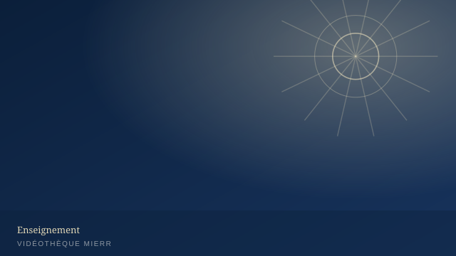
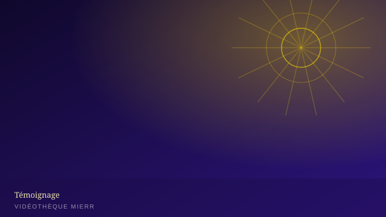
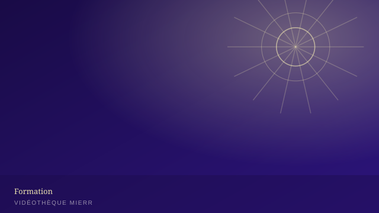
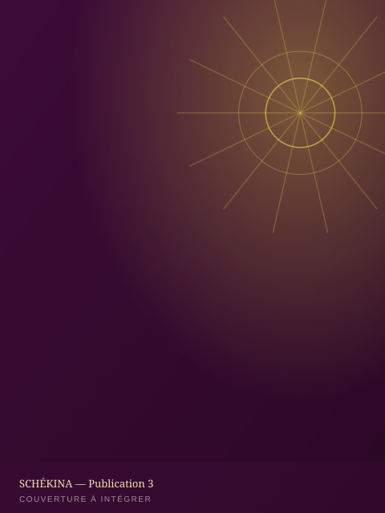
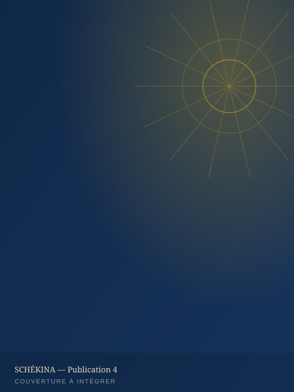

Conférence
[Titre de la conférence]
[Résumé de l'enseignement en deux à trois lignes.]
Retrouvez l'ensemble des contenus médias de la MIERR : vidéos, podcasts, publications et communiqués officiels — une médiathèque pensée pour grandir avec la mission.
 ▶
▶
▶ ▶
▶
▶[Résumé de l'enseignement en deux à trois lignes.]

[Résumé de l'enseignement en deux à trois lignes.]

[Résumé du reportage en deux à trois lignes.]

[Résumé du témoignage en deux à trois lignes.]
[Résumé de l'interview en deux à trois lignes.]
Les publications de la MIERR sont éditées par la maison d'édition SCHÉKINA.

[Édition — mois / année]

[Édition — mois / année]

[Édition — mois / année]

[Édition — mois / année]
Un aperçu de nos archives — l'intégralité des albums est disponible dans la galerie.